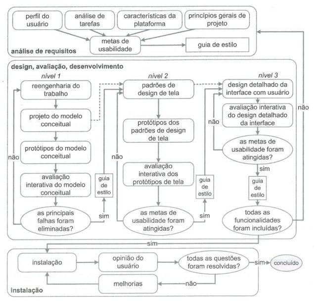

Ferramentas do Projeto
Google Meet/Microsoft Teams
Microsoft 365
Github
Zenhub
Github Pages
Telegram
Projeto
O projeto D32, a priori, tem como objetivo traçar todo o desenvolvimento inicial de um jogo sério educacional. O 32b será um projeto realizado para a disciplina de Seminários de Engenharia de Software, do campus UnB-FGA, no primeiro semestre de 2020.
O jogo desenvolvido terá como tema Acessibilidade em Interfaces Móveis, e a principal meta é instruir os seus jogadores sobre o desenvolvimento adequado de Interfaces Móveis acessíveis, para assim manter os padrões de qualidade de software descritos pelo MCCALL’S.
Cronograma
| Semana | Atividade | Responsável |
|---|---|---|
| 23/08 a 29/08 | -Planejamento do projeto; -Equipe; -Tema do jogo; -Ferramentas do projeto; -Ciclo de Vida; |
-João Gabriel Antunes - -Equipe -Equipe -Equipe |
| 31/08 | Entrega de atividades | Equipe |
| 30/08 a 05/09 | - História do jogo; -Título do jogo; -Fluxo do jogo; -Personagem; |
Equipe |
| 06/09 a 12/09 | -Gameplay; -Experiência do Jogo; -Storyboard, inimigos, material de bonus, plataforma, tarefas, fases, história do jogo; |
-Ian Rocha, Marco Antonio -Bruno Oliveira, Thallys Braz e João Gabriel -Equipe |
| 14/09 | Entrega de atividades | Equipe |
| 13/09 a 19/09 | -Perfil do usuário, personas e análise de tarefas; -Princípios e diretrizes para o design de IHC; |
-Ian Rocha, Marco Antonio, João Gabriel -Bruno Oliveira, Thallys Braz |
| 16/09 | Feedback do projeto | Prof. André Barros |
| 21/09 | Entrega de atividades | Equipe |
| 23/09 a 28/09 | -Planejamento da avaliação e do relato dos resultados da avaliação do storyboard e análise de tarefas. | Equipe |
| 28/09 | Entrega de atividades | Equipe |
| 30/09 | Feedback do projeto | Prof. André Barros |
| 29/09 a 05/10 | -Planejamento da avaliação e do relato dos resultados da avaliação do storyboard e análise de tarefas. | Equipe |
| 05/10 | Entrega de atividades | Equipe |
| 06/10 a 19/10 | -Entrega da avaliação e do relato dos resultados da avaliação do protótipo de papel. | Equipe |
| 14/10 | Feedback do projeto | Prof. André Barros |
| 19/10 | Entrega de atividades | Equipe |
| 20/10 a 03/11 | -Planejamento da avaliação e do relato dos resultados da avaliação do protótipo de alta fidelidade. | Equipe |
| 03/11 | Entrega de atividades | Equipe |
| 04/11 a 30/11 | -Refinamento e construção do projeto final; -Desenvolver slide de apresentação; |
Equipe -João Gabriel Antunes |
| 30/11 | Entrega da apresentação final | Equipe |
| 02/12 | Apresentação do projeto final | Equipe |
Equipe
Bruno Oliveira - @BrunoOliveiraDantas
Ian Pereira Rocha - @IanPSRocha
João Gabriel Antunes - @flyerjohn
Marco Antônio de Lima Costa - @markinlimac
Thallys Braz - @thallysbraz
Ciclo de Vida

Vídeo introdutório do planejamento
Versionamento
| Versão | Data | Modificação | Autor | Revisor |
|---|---|---|---|---|
| 1.0 | 30/08 | Criação do Planejamento do Projeto | João Gabriel Antunes | Bruno Oliveira Dantas |
| 1.1 | 05/09 | Atualização do planejamento | João Gabriel Antunes | Ian Rocha |
| 1.2 | 09/009 | Adição do link ao vídeo introdutório | João Gabriel Antunes | Thallys Braz |